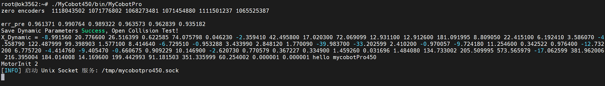
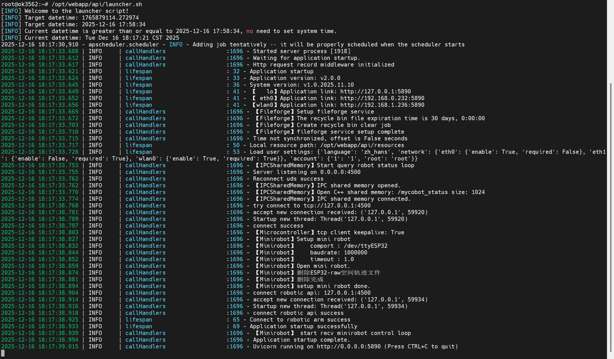
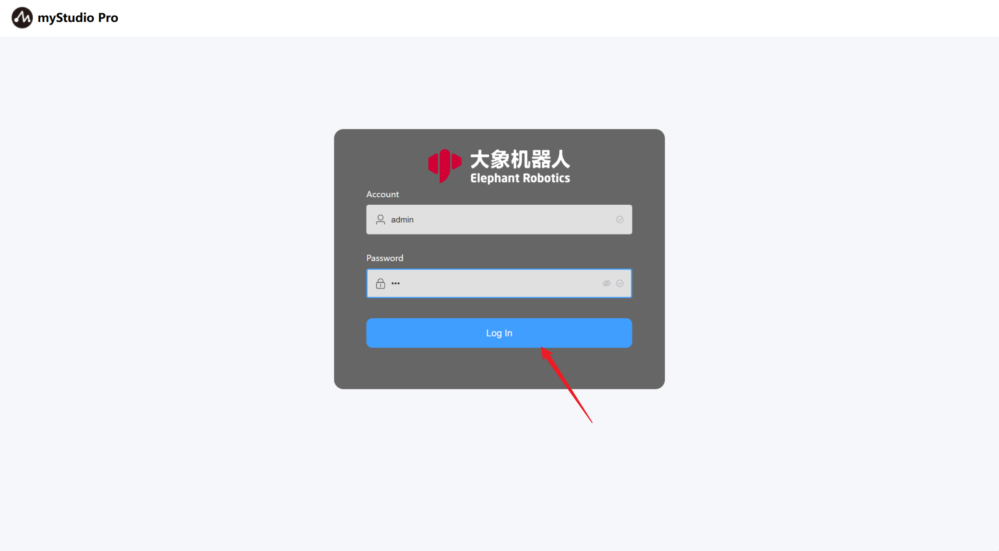
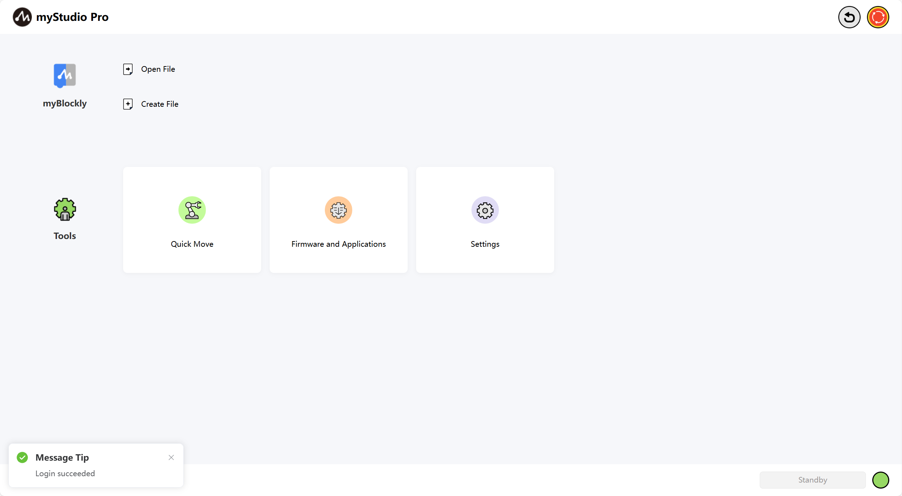

MyStudioFirstUse
Supported Operating Systems for myStudio Pro
Windows
macOS
Linux arm64
Supported Modern Browsers for myStudio Pro
Chrome
Edge
Safari
...
Preparations Before Using myStudio Pro
Hardware Configuration
Before using myStudio Pro, please ensure your machine is powered on.
>
The following are the steps to start the server program (using Windows as an example):
Static IP Configuration
- First, you need a working network cable. Connect one end of the cable to the network port on your machine's dock and the other end to the network port on your PC.

After connecting the network cable, you need to manually configure a static IP address for your machine for subsequent SSH connections. The configuration steps are as follows:
Open Control Panel, select
Network and Internet, and then clickView network status and tasks.

- This will take you to the
Network and Sharing Centerpanel. SelectChange adapter settingsin the left-hand menu and then click to open theNetwork Connectionspanel.

- Select
Ethernetand right-click to open thePropertiespanel. Then, left-click to selectInternet Protocol Version 4 (TCP/IPv4), and finally click the Properties button at the bottom.

- In the Properties panel, click
Use the following IP address (S), configure a static IP address192.168.0.x, and a subnet mask255.255.255.0.

Finally, click OK to close the corresponding configuration panel.
To verify successful static IP configuration, press
Win+Rto open the Run window, then typecmdto open the Windows Command Prompt. Typeping 192.168.0.232and press Enter. If the following output is displayed, the static IP configuration is successful and the network cable connection is normal.

Starting the Server Program
Note: The system has already been configured to enable the auto-start service. The following steps are instructions for manual startup.
You can log in to the machine system via
sshfor operation and control. This chapter uses theMobaXtermgraphical tool as an example.Open the application, click the
Sessionbutton in the top left corner to bring up the panel, selectSSHto connect, enter the correspondingRemote host, and click "Confirm".

- After a successful connection, the panel will ask you to enter your
usernameandpassword(both arerootby default) and press Enter to log in to the system.

- The MyCobot Pro 450 server program is located by default in the following path:
/root/MyCobot450/bin. Use the command to view the files in the current directory to check if the correspondingexecutable fileexists. The executable file name is usuallyMyCobotPro.
ls
- Executing the server file. If the terminal outputs the following information without any error messages, the file has run successfully.
./MyCobotPro

If the robot control service script is executed and the terminal does not report an error and outputs the following information, the file runs successfully.
/opt/webapp/api/launcher.sh

Of course, you can also log in and operate using the cmd panel. The specific steps are as follows (taking Windows as an example):
Use win + r to open the cmd panel and enter the following command.
Enter
ssh-keygen -R 192.168.0.232Enter
ssh root@192.168.0.232
Then enter the login password root

Next, follow the steps above to run the server program.
Software Configuration
Before using myStudio Pro, ensure that a browser, such as Chrome / Edge / Safari or other modern browsers, is installed on your computer.
Accessing myStudio Pro
myStudio Pro is a web application and does not require installation. It can be used in a browser via IP address.
- In the
sshconnection terminal, enterifconfigto view, configure, and manage network interface parameters, and confirm theIP.
ifconfig

- Then enter the
IPand port number (default deployment to port 8000) into the browser'sURLaddress. Note: thehttpprotocol must be included. The complete address is as follows:
http://<robotic arm system IP>:<port number>
Note: If you access myStudio Pro via the LAN1 network port, the system will perform an automatic login operation. After the login is completed, you will automatically enter the main page
When you access myStudio Pro using the LAN2 or WLAN network port, you need to log in first. The default username and password are
adminand123. When the browser loads the login page, enter the default password and click the 'Login' button to perform the login operation.

- When the browser renders the page, it means that myStudio Pro has been successfully accessed.
